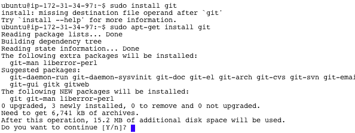
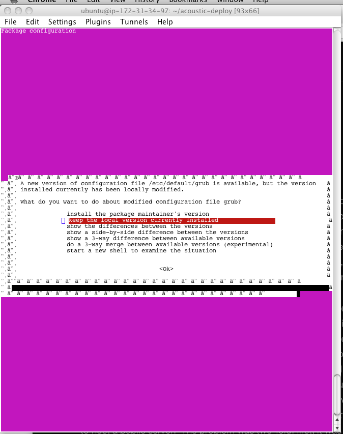
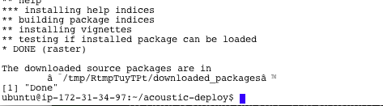

Acoustic Server Installation: Local Installation
Kevin Weng
Prerequisites:
-
Administrative access (you must be able to use 'sudo') to a computer with Ubuntu 12.10 installed. (An AWS instance satisfies this requirement)
-
A working internet connection. (To download the necessary software and packages)
Installation:
-
Open a terminal window.
-
Type sudo apt-get install git and hit enter.

-
Type "Y".
An installer run, and setup git.
-
In your command window, type:
git clone https://github.com/gregorylburgess/acoustic-deploy.git and hit enter.
This will download the the tool and sample bathymetry to your AWS instance, so may take a while.
-
Type cd acoustic-deploy and hit enter.
-
Type: source scripts/install.sh and hit enter.
This will run several installers which require user input.
Keep hitting enter/Y at the prompts.

-
If you're asked to install a new version of grub,
select "keep the local version currently installed" by using the arrow keys, and hit enter.

-
When it's done you should see:

-
Type: sudo nohup Rscript PublicServer.R
Open a new tab in your web browser.
If you're installing the server on AWS:
Enter into the URL bar the Elastic IP that you copied before, and append /custom/base
Our url is 54.213.157.76/custom/base
If you're doing a local installation of the server:
Enter into the URL bar 127.0.0.1/custom/base
You should see this:

-
If you need to kill the server (perhaps due to an error), go back to the SSH terminal, and press ctrl + c a few times.
To restart the server, type the command you used originally,
sudo nohup Rscript PublicServer.R, into the terminal window.
If you do restart the server, make sure to refresh the browser window containing the web app.